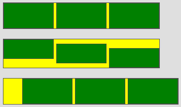

HBox/VBox¶
The box layouts lay out their children one after the other. The horizontal box layout lays out widgets in a horizontal row, from left to right, while the vertical box layout lays out widgets in a vertical column, from top to bottom.
Preview Image¶

Features¶
- Respects Minimum and maximum dimensions
- Priorized growing/shrinking (flex)
- Margins with horizontal (HBox) resp. vertical (VBox) collapsing)
- Auto sizing (ignoring percent values)
- Percent widths (not size hint relevant)
- Alignment (Children property {@link qx.ui.core.LayoutItem#alignX} is ignored)
- Horizontal (HBox) resp. vertical (VBox) spacing (collapsed with margins)
- Property to reverse children ordering (starting from last to first)
- Vertical (HBox) resp. horizontal (VBox) children stretching (respecting size hints)
Description¶
Both box layouts lay out their children one after the other. This description will discuss the horizontal box layout. Everything said about the horizontal box layout applies equally to the vertical box layout just with a vertical orientation.
In addition to the child widget's own preferred width the width of a child can also be defined as percent values. The percent value is relative to the inner width of the parent widget without any spacings. This means a horizontal box layout with two children of width 50% and with a spacing will fit exactly in the parent.
The horizontal box layout tries to stretch all children vertically to the height of the box layout. This can be supressed by setting the child property allowGrowY to false. If a child is smaller than the layout and cannot be stretched it will be aligned according to its alignY value. The alignX property of the layout itself defines the horizontal alignment of all the children as a whole.
The horizontal spacing can be defined using the property spacing. In addition to the spacing property each widget can define left and a right margin. Margins and the spacing are always collapsed to the largest single value. It for example the layout has a spacing of 10 pixel and two consecutive child widgets A and B - A with a right margin of 15 and B with a left margin of 5 - than the spacing between these widgets would be 15, the maximum of these values.
The preferred height of an horizontal box layout is determined by the highest child widged. The preferred with is the sum of the widths of each child plus the spacing resulting from margins and the spacing property.
Layout properties¶
- flex (Integer): Defines the flexibility (stretching factor) of the child (defaults to 0)
- width (String): Defines a percent width for the item. The percent width, when specified, is used instead of the width defined by the size hint. The minimum and maximum width still takes care of the elements limitations. It has no influence on the layout's size hint. Percents are mainly useful for widgets which are sized by the outer hierarchy.
Alternative Names¶
- QVBoxLayout (Qt)
- StackPanel (XAML)
- RowLayout (SWT)
Demos¶
Here are some links that demonstrate the usage of the layout:
- Simple HBox usage
- HBox with flex widths
- HBox with child margins
- HBox with percent widths
- HBox with switchable ''reversed'' property
- HBox with separators
- HBox with vertical shrinking
- Simple VBox usage
- VBox with flex heights
- VBox with child margins
- VBox with percent heights
- VBox with switchable ''reversed'' property
- VBox with separators
- VBox with horizontal shrinking